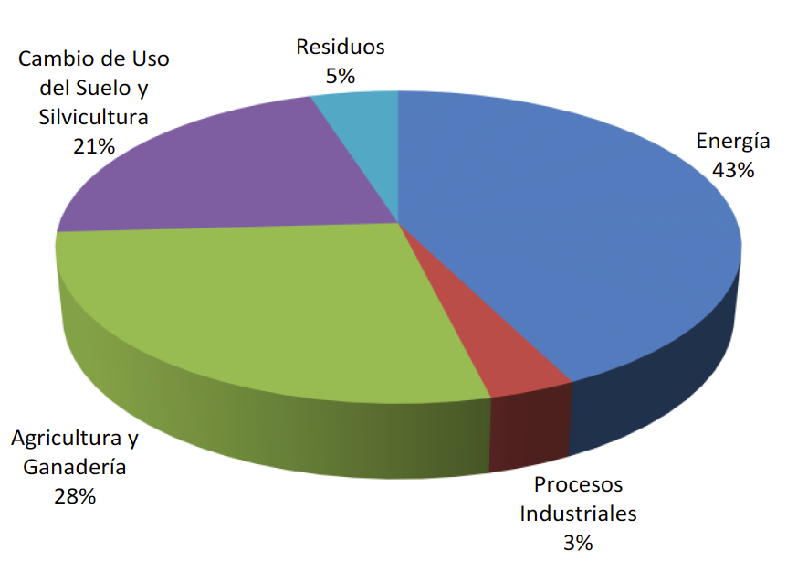

REPÚBLICA ARGENTINA
CONTRIBUCIÓN PREVISTA Y DETERMINADA A NIVEL NACIONAL
En concordancia con las Decisiones 1/CP.19 y 1/CP.20, y teniendo en cuenta los principios, disposiciones y estructura de la Convención Marco de Naciones Unidas sobre el Cambio Climático (CMNUCC), la República Argentina presenta su Contribución Prevista y Determinada a Nivel Nacional.
Introducción
Los impactos que hoy sufre el planeta obligan a tomar medidas inmediatas que implican grandes esfuerzos económicos. Por esta razón, los países que aún no han alcanzado su pleno desarrollo son quienes sufren con mayor gravedad este fenómeno, a pesar de no ser los principales causantes. En ese sentido, el cambio climático incrementa las desigualdades ya existentes entre las diferentes naciones, pudiendo generar un nuevo obstáculo al desarrollo de los países.
Para resolver este problema se requiere la puesta en marcha de acciones concretas en materia de adaptación, mitigación, así como la provisión de medios de implementación, pero para que eso sea posible debe existir un marco de referencia consensuado entre todos los países del mundo. A los fines de alcanzar un acuerdo entre naciones tan distintas, es importante, en primer lugar, comprender las diferencias que las separan, tanto en sus procesos históricos como en sus metas actuales y futuras. Ello resulta necesario para evitar el incremento de las desigualdades. Por esa razón, el respeto y la plena vigencia del principio de responsabilidades comunes pero diferenciadas es fundamental para el éxito del proceso.
Del mismo modo, es necesario evitar que las medidas adoptadas para combatir el cambio climático, incluidas las unilaterales, se constituyan en un medio de discriminación arbitraria o injustificable o en una restricción encubierta al comercio internacional.
El cambio climático puede revertirse si todos los países del mundo logran una articulación de esfuerzos humanos y económicos, sin precedentes en la historia de la humanidad, que sólo puede lograrse si existe una decisión política sincera de todos los gobiernos del mundo.
Circunstancias nacionales
La República Argentina se ubica en el hemisferio sur y occidental. Su territorio se extiende tanto por el continente Americano como en el Antártico; incluyendo las Islas Orcadas del Sur, las islas australes y las Islas Malvinas.
La Argentina está compuesta por 23 provincias y la ciudad autónoma de Buenos Aires e incluye las Islas Malvinas, Georgias del Sur y Sandwich del Sur, y los espacios marítimos circundantes que son parte integrante del territorio nacional argentino. Dichas islas se encuentran ilegítimamente ocupadas por el Reino Unido de Gran Bretaña e Irlanda del Norte y son objeto de una disputa de soberanía entre ambos países, reconocida por la Asamblea General de las Naciones Unidas, el Comité de Descolonización de las Naciones Unidas y otras organizaciones internacionales.
Con un total de 40.117.096 habitantes, alrededor del 90% de la población del país habita en zonas urbanas. La provincia de Buenos Aires presenta el mayor porcentaje de población (39 % del total), seguido por las provincias de Córdoba, Santa Fe y la Ciudad Autónoma de Buenos Aires. En el Área Metropolitana de Buenos Aires, que comprende la Ciudad de Buenos Aires y 26 jurisdicciones municipales de la Provincia de Buenos Aires, se concentra el 31.92% de la población en una superficie que corresponde al 0.50% del total del territorio nacional.
El territorio argentino tiene una muy significativa biodiversidad resultante de un vasto territorio con un amplio desarrollo latitudinal y altitudinal con diversas características geomorfologías, climáticas y edafológicas, resultando en la presencia de 18 ecorregiones (15 continentales, 2 marinas y 1 en la Antártida).
Desde el año 2003 la Argentina ha adoptado un modelo económico que ha permitido articular virtuosamente el crecimiento económico y la inclusión social. Con un Estado activo en la promoción del desarrollo económico, en el fomento y la creación de puestos de trabajo y en la distribución del ingreso, la mayoría de los indicadores sociales han demostrado una evolución positiva. En este sentido, algunos de los logros obtenidos durante los últimos años incluyen: la creación de más de 6 millones de puestos de trabajo; la reducción en la desocupación del 20,4% al 6,6% desde el 2003 al 2015; el incremento en el PBI destinado a inversión social nacional del 7.2% al 13.9% entre el 2004 y el 2014; el incremento en el PBI destinado a la jubilación del 3,4% al 6,7% entre el 2004 y el 2014; el aumento en la tasa de cobertura previsional por encima del 96% de las personas con edad para jubilarse; la creación de 16 nuevas Universidades Nacionales; el incremento en la matrícula universitaria de un 33% entre 2001 y 2014; y la caída del coeficiente Gini que pasó de 0,534 a 0,410 entre el 2003 y el 2015.
Vulnerabilidad e impactos del cambio climático
La posición geográfica del país y sus características socioeconómicas determinan un territorio vulnerable al cambio climático y a la variabilidad climática, situación que se ha evidenciado en los últimos años como consecuencia de los sucesivos y crecientes eventos extremos, así como de cambios graduales, que afectaron varias regiones del país.
Estudios desarrollados por investigadores argentinos demostraron que durante el periodo 1960- 2010 se observó un aumento de la temperatura media en la mayor parte de la República Argentina, de alrededor de 0,5 °C, llegando a superar 1°C en algunas zonas de la Patagonia, registrándose también un aumento de los días con olas de calor y una reducción en el número de días con heladas. En lo que respecta a la precipitación, se produjeron los mayores aumentos en el este del país ocasionando inundaciones de gran impacto socio-económico. En zonas semiáridas, se observó una disminución de las precipitaciones en la zona cordillerana y una disminución de los caudales de los ríos Cuyanos.
Con relación a los potenciales impactos de cambio climático para el resto del siglo XXI cabe destacar que se proyecta un aumento de la temperatura media de entre 0,5 a 1°C en casi todo el país hacia mediados del presente siglo, que implicaría una aceleración del calentamiento observado en los últimos 50 años. En lo que respecta a la precipitación media los cambios no son importantes en las próximas décadas aunque se proyectan aumentos en la frecuencia de eventos de precipitaciones intensas.
La vulnerabilidad frente al cambio climático cobra relevancia considerando que la actividad agropecuaria ocupa un lugar importante en la actividad económica del país. Este hecho adquiere aún mayor trascendencia teniendo en cuenta que la Argentina es un país con protagonismo en la producción y provisión de alimentos a nivel mundial, jugando un rol fundamental en la seguridad alimentaria global.
Perfil de emisiones de gases de efecto invernadero (GEI)
Cuando se analiza el perfil de emisiones de GEI del país debe considerarse:
a) El alto consumo energético vinculado al transporte en un país que cuenta con un extenso territorio;
b) El sostenido incremento del consumo de energía en el sector residencial fruto de una política general de desarrollo con inclusión social que tiene como uno de sus ejes garantizar el acceso universal a la energía en condiciones equitativas, como un elemento determinante de calidad de vida de los habitantes;
c) El sostenido incremento del consumo de energía en los sectores productivos como insumo estratégico innegable para el desarrollo económico y la generación de empleo;
d) La producción de alimentos para satisfacer la creciente demanda mundial, contribuyendo a garantizar la seguridad alimentaria global.
De acuerdo a los resultados de la Tercera Comunicación Nacional de la República Argentina sobre Cambio Climático, se estiman emisiones del orden de 429.437 Gg CO2 eq para el último inventario nacional de gases de efecto invernadero. A continuación se observa la distribución de emisiones de acuerdo a los distintos sectores:
Distribución de emisiones de GEI, por sectores.

Esfuerzos realizados en adaptación y mitigación
La Argentina ha participado activamente en el proceso de generación y desarrollo del régimen climático internacional, en particular en lo relativo a la Convención Marco de Naciones Unidas sobre Cambio Climático (CMNUCC) y el Protocolo de Kyoto. Asimismo, la ciudad de Buenos Aires fue sede de dos Conferencias de Partes: la COP4 de 1998 y la COP10 de 2004.
Desde ese tiempo el país viene implementando acciones nacionales voluntarias de mitigación y adaptación en diferentes sectores. Sin perjuicio de ello, con la finalidad de hacer frente en forma más eficiente y articulada a los desafíos del cambio climático, la Argentina diseñó la “Estrategia Nacional en Cambio Climático” y, dentro de ese marco institucional, como órgano coordinador, se creó el “Comité Gubernamental en Cambio Climático”, espacio en el que participan representantes del estado nacional y de las provincias.
En el sector energético se definieron dos ejes centrales: la diversificación de la matriz energética y la promoción del uso racional y eficiente de la energía. En tal sentido el país cuenta con una estructura normativa y con planes estratégicos a largo plazo que promueven, entre otras medidas, una mayor participación de fuentes renovables no convencionales, la energía hidroeléctrica, la energía nuclear, la sustitución de combustibles fósiles por biocombustibles. Asimismo, se han establecido un conjunto de programas y acciones destinadas a la reducción de la intensidad energética del consumo.
En el sector transporte la optimización del sistema de transporte ferroviario es concebida como una búsqueda de sustentabilidad ligada a acciones de mitigación del cambio climático. En ese sentido, constituye un marco normativo importante la ley N° 27.132 que declara de interés público nacional y como objetivo prioritario de la República Argentina la política de reactivación de los ferrocarriles de pasajeros y de cargas, la renovación y el mejoramiento de la infraestructura ferroviaria y la incorporación de tecnologías y servicios que coadyuven a la modernización y a la eficiencia del sistema de transporte público ferroviario.
En el sector de agricultura, silvicultura y otros usos del suelo (AFOLU), entre otras medidas, se dictó la Ley 26.331 de Protección Ambiental de los Bosques Nativos estableciendo los presupuestos mínimos de protección ambiental para el enriquecimiento, la restauración, conservación, aprovechamiento y manejo sustentable de los bosques nativos, y de los servicios ambientales que estos brindan a la sociedad. Ese marco institucional permitió a las provincias llevar adelante un proceso de ordenamiento territorial de los bosques nativos existentes de acuerdo a criterios de sustentabilidad y estableciendo las diferentes categorías de conservación en función del valor ambiental de las distintas unidades de bosque nativo y de los servicios ambientales que estos prestan. En ese marco se creó el Fondo Nacional para el Enriquecimiento y la Conservación de los Bosques Nativos como medio para implementar mecanismos de compensación al sector privado con la finalidad de enriquecer, conservar, restaurar y promover el manejo sustentable de estos bosques.
En el mismo sector se han ha adoptado diversas iniciativas que han permitido aumentar la producción de alimentos reduciendo el impacto ambiental, entre ellas, el desarrollo de variedades que han permitido la disminución en la utilización de pesticidas y la resistencia al estrés hídrico, la introducción de modificaciones en las fechas de siembra y el desarrollo de sistemas de riego para compensar períodos de déficit hídrico, la introducción de prácticas de cobertura así como de sistemas de alerta temprana.
Asimismo, resultó central en la estrategia para abordar el cambio climático en el mencionado sector la incorporación de la siembra directa, combinada con la fertilización adecuada y la rotación de cultivos, medidas que han permitido retener humedad en los suelos y mejorar su estructura y fertilidad. Otras medidas incorporadas a las prácticas son la agricultura de precisión, el desarrollo de energía derivada de la biomasa, la promoción de la agricultura orgánica, así como la plantación y el manejo sustentable de los bosques implantados.
Con la finalidad de reducir los riesgos de los impactos del cambio climático, la Argentina analizó corridas de modelos climáticos para proyectar los cambios en su territorio en los próximos 100 años. En el mismo sentido, se han establecido complejas herramientas, entre otras, el “Fideicomiso de Infraestructura Hídrica”, el “Inventario Nacional de Glaciares” y el mencionado “Fondo Nacional para el Enriquecimiento y la Conservación de los Bosques Nativos” y se desarrolló la “Estrategia Nacional de Biodiversidad”. Se crearon, asimismo, espacios de articulación interinstitucional para promover la reducción de riesgos de desastres, como la “Plataforma Nacional para la Reducción de Riesgos de Desastres” y la “Comisión de Trabajo de Gestión de Riesgo”.
Finalmente, en función de que la vulnerabilidad social es un factor determinante del riesgo frente a los impactos del cambio climático, se considera que las políticas de mejora de las condiciones de vida de la población, llevadas a cabo en el marco del modelo de crecimiento con inclusión social, fortalecen las capacidades de adaptación.
Proceso de elaboración de la contribución nacional
La contribución nacional que se presenta es el resultado de un proceso político-técnico iniciado en el marco del Comité Gubernamental y la Estrategia Nacional en Cambio Climático. Resultaron insumos esenciales los estudios desarrollados en el marco de la Tercera Comunicación Nacional que incluyó la actualización del inventario nacional de GEI, la identificación del potencial de mitigación nacional, el desarrollo de escenarios de cambio climático, la identificación de los impactos y vulnerabilidades y de las medidas de adaptación para hacer frente a los mismos.
Tanto la mencionada comunicación nacional, como la contribución nacional son el resultado de un proceso participativo, que incluyó la visión, opiniones y propuestas de los sectores: público, privado, científico-técnico y de las organizaciones de la sociedad civil a través de la realización de numerosas reuniones, talleres de trabajo y encuestas.
El proceso de consulta con los distintos actores permitió analizar las medidas de mitigación y adaptación identificadas en la Tercera Comunicación Nacional y determinar, a partir de allí, un potencial de mitigación, así como acciones en materia de adaptación.
Justa y Ambiciosa
La contribución nacional es justa y ambiciosa, se sustenta en un proceso que lleva años y que ha implicado desarrollo de conocimiento, elaboración de marcos institucionales y medidas concretas. La prioridad de la República Argentina es continuar la senda de crecimiento con inclusión social que le permita incrementar el bienestar de todos los sectores de la población, en particular de los más vulnerables. La contribución se determinó identificando las medidas tanto de adaptación como de mitigación que se acoplan con los esfuerzos dirigidos a ese objetivo. Asimismo, se consideró la participación actual del país en las emisiones globales y su contribución a la seguridad alimentaria global.
La Argentina ha identificado un potencial de mitigación que le permitiría contribuir a la lucha contra el cambio climático. Parte de ese potencial puede alcanzarse con un gran esfuerzo económico y social de todos los argentinos, pero únicamente podrá realizarse por completo si se cuenta con los medios de implementación necesarios.
|
|
|
Meta Incondicional
|
La Argentina propone una meta de reducción de sus emisiones de GEI del 15% en el año 2030 con respecto a las emisiones proyectadas en su BAU al mismo año. La meta incluye, entre otras, acciones vinculadas a: promover el manejo sostenible de los bosques, la eficiencia energética, los biocombustibles, la energía nuclear, las energías renovables y el cambio modal en el transporte. Los criterios para seleccionar las acciones, incluyeron el potencial para reducir/capturar emisiones de GEI y los co-beneficios asociados, así como la posibilidad de aplicar tecnologías desarrolladas nacionalmente.
|
|
Meta Condicional
|
La Argentina podría lograr una ampliación en la meta de reducción si se dan las siguientes condiciones: a) financiamiento internacional adecuado y predecible; b) el apoyo a la transferencia, la innovación y el desarrollo de tecnologías; c) el apoyo a la creación de capacidades.
En este caso, podría alcanzar una reducción de sus emisiones de GEIs del 30% en el año 2030 con respecto a las emisiones proyectadas en su BAU al mismo año. La meta contempla tanto el incremento del alcance de medidas en marcha, como la implementación de nuevas medidas. En la mayor parte de los casos se han identificado y analizado los costos/beneficios económicos de las mismas. Los criterios para seleccionar las acciones incluyeron el potencial para reducir/capturar emisiones de GEI y los co- beneficios asociados, así como la posibilidad de aplicar tecnologías desarrolladas nacionalmente.
|
|

|
|
Tipo de meta
|
Porcentaje de reducción de emisiones absoluta respecto de un escenario tendencial “Business as usual” (BAU).
|
|
Período Meta
|
2030
|
|
Línea de Base
|
El escenario de línea de base “Business as usual” (BAU) se construye de acuerdo a una proyección del crecimiento económico en ausencia de políticas de mitigación al cambio climático. La proyección inicia en el año 2005 y llega al 2030 con emisiones de GEI equivalentes a 670 Mt CO2e.
|
|
Alcance y Cobertura
|
|
Sectores
|
Se considera una cobertura de todo el territorio nacional con alcance en los siguientes sectores: Energía; Agricultura; Residuos; Procesos Industriales; y Cambio de uso de suelo y silvicultura.
|
|
GEIs
|
La contribución contempla seis gases de efecto invernadero: Dióxido de carbono (СО2); Metano (СН4); Óxido nitroso (N2O); Hidrofluorocarbonos (HFC); Perfluorocarbonos (PFC); y Hexafluoruro de azufre (SF6).
|
|
Metodología
|
Inventarios según las directrices del IPCC 1996 con actualizaciones de factores de emisión (FE) IPCC 2006. Valores potencial de calentamiento global (GWP) del Segundo informe del IPCC (SAR).
|
|
Necesidades en adaptación
|
La Argentina considera que la adaptación es su principal prioridad en materia de cambio climático teniendo en cuenta que los efectos adversos de este fenómeno ya se evidencian en el territorio nacional. En este contexto ha venido implementando, con medio propios, una serie de acciones en la materia. Sin perjuicio de ello y en función del apoyo que reciba en forma de financiamiento internacional, desarrollo y transferencia de tecnología y creación de capacidades podría extender y profundizar sus acciones en adaptación entre otras en los siguientes ejes de trabajo:
a) La intensificación y ampliación de los sistemas de alerta temprana sobre lluvias intensas, inundaciones y olas de calor y de los sistemas de respuesta y recuperación de los desastres de origen climático;
b) El enriquecimiento, conservación, restauración mejoramiento y manejo sostenible de los bosques nativos;
c) La ampliación de la superficie agrícola bajo irrigación y las mejoras en la eficiencia de la gestión del recurso hídrico;
d) La mejora en el proceso de toma de decisiones en “Manejo de cultivos”;
e) La reducción de la vulnerabilidad y fortalecimiento de los procesos de gestión de salud vinculados a impactos directos e indirectos del cambio climático;
f) La implementación de medidas Estructurales y no Estructurales para hacer frente a los eventos extremos; y
g) la promoción de la conservación de la biodiversidad y la Adaptación Basada en Ecosistemas.
En gran parte de los casos, se han identificado y analizado medidas concretas con los costos/beneficios económicos asociados a las mismas.
|
Disclaimer
Nada en esta contribución puede interpretarse como que Argentina esté asumiendo compromisos que no estén contemplados en el objetivo, principios y disposiciones de la Convención Marco de Naciones Unidas sobre el Cambio Climático, especialmente en lo referente a su seguridad alimentaria y al principio de responsabilidades comunes pero diferenciadas.
Dependiendo del resultado final de las negociaciones sobre cambio climático tendientes a adoptar un nuevo acuerdo en la COP 21, la Argentina se reserva el derecho de presentar revisiones a esta contribución prevista y determinada a nivel nacional.